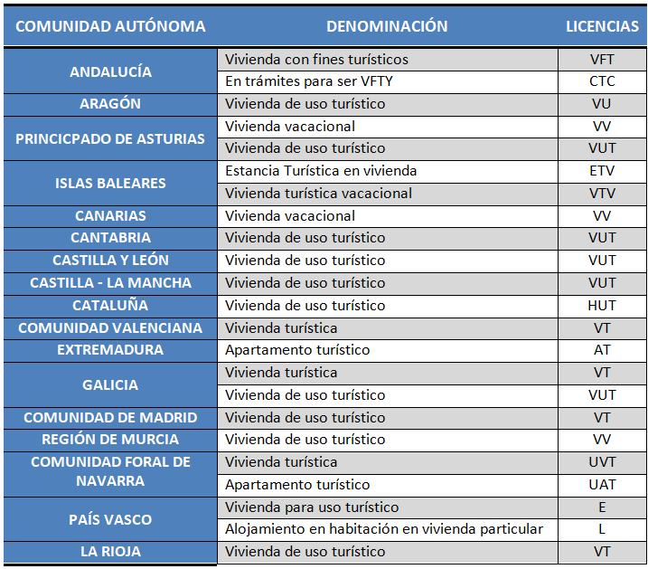
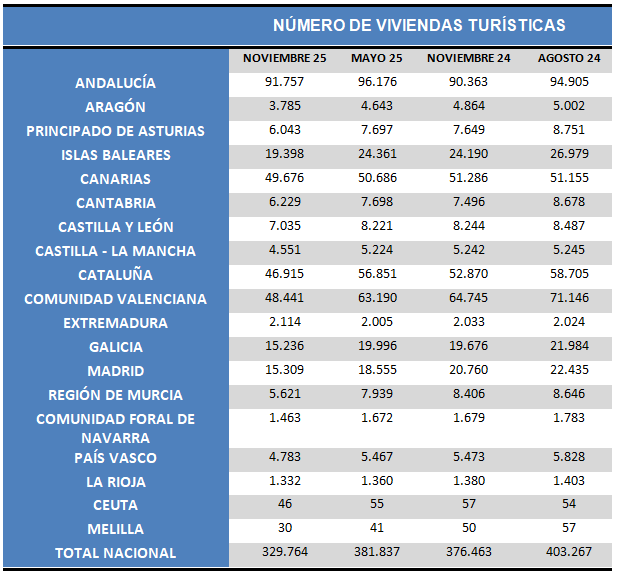
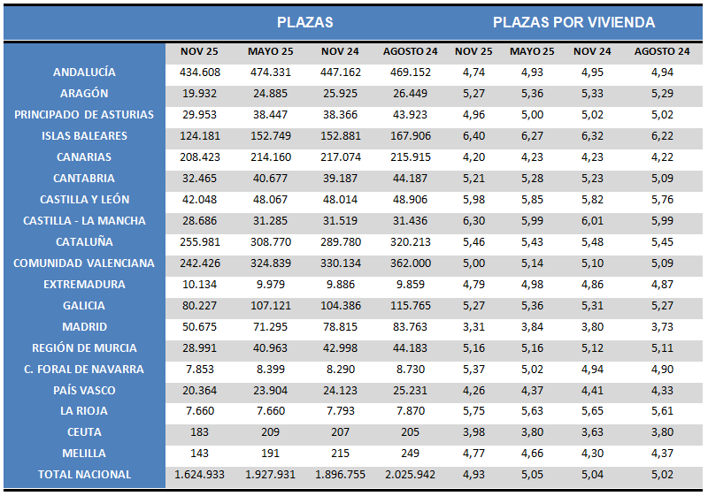

Se trata de una de las especializaciones que mayor auge viene experimentando en los últimos años, y supone dar entrada en el sector del alojamiento turístico a una amplia gama de propiedades particulares que, debidamente equipadas y dotadas del correspondiente registro de control, facilitan el servicio de alojamiento.
Dependiendo de la comunidad autónoma existen diferentes variables, considerándose genéricamente las viviendas vacacionales, las viviendas turísticas o las viviendas de uso turístico.
Se entiende por vivienda vacacional aquella que está amueblada y equipada, en condiciones de uso inmediato y es comercializada en canales de oferta turística, para ser cedida temporalmente y en su totalidad a terceros, de forma habitual, con fines de alojamiento vacacional y a cambio de un precio. (Canarias).
En cambio, se entiende por viviendas turísticas los establecimientos unifamiliares aislados en los que se preste servicio de alojamiento turístico, con un número de plazas no superior a diez y que disponen, por estructura y servicios, de las instalaciones y del mobiliario acomodado para su utilización inmediata, así como para la conservación, elaboración y consumo de alimentos dentro del establecimiento. (Galicia).
Por último, son viviendas de uso turístico las cedidas a terceras personas, de manera reiterada y a cambio de contraprestación económica, para una estancia de corta duración, amuebladas y equipadas en condiciones de inmediata disponibilidad y con las características establecidas por vía reglamentaria, con la peculiaridad de que pueda ser ofertado por particulares en su propia vivienda. Constituyen estancias de corta duración aquellas en las que la cesión de uso es inferior a treinta días consecutivos. (Galicia).
Dependiendo de la comunidad autónoma pueden aparecer variables diferentes.
El alojamiento turístico haciendo uso de viviendas particulares no es un concepto claramente definido y del cual exista una única definición, como puede comprobarse. Esta definición depende de las comunidades autónomas, y cada una clasifica los alojamientos turísticos siguiendo sus propios criterios. En el siguiente cuadro se resumen los tipos de alojamiento seleccionados en cada comunidad autónoma, así como la nomenclatura de sus licencias:

En cualquier caso, esta modalidad ofrece a los turistas la ventaja de disponer de un espacio de privacidad con un ahorro de costes respecto a otras modalidades, a lo que se puede unir la amplia variedad de espacios que se comercializan. En cambio, puede presentar algunos inconvenientes como los problemas de recelo y convivencia con los propietarios de otros inmuebles no incluidos como alquiler vacacional junto con la limitación de servicios respecto a los establecimientos hoteleros.

Si se analizan los datos estadísticos, el INE registra tres tipos de datos:
- Número de unidades.
- Número de plazas.
- Número de plazas medio por unidad de alojamientos.
La estadística se publica dos veces al año, coincidiendo con los meses de mayo y noviembre (hasta el año 2024 se ofrecía en febrero y agosto), al entender que son las fechas más representativas, dado que este tipo de servicios se reserva con cierta antelación, y hay muchos establecimientos que tienen altas y bajas a lo largo del año.
En cuanto a plazas:
